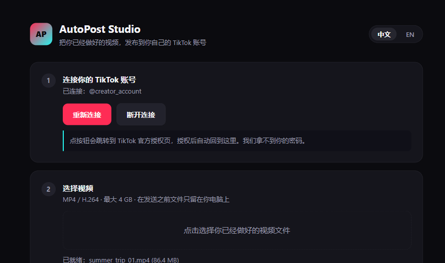
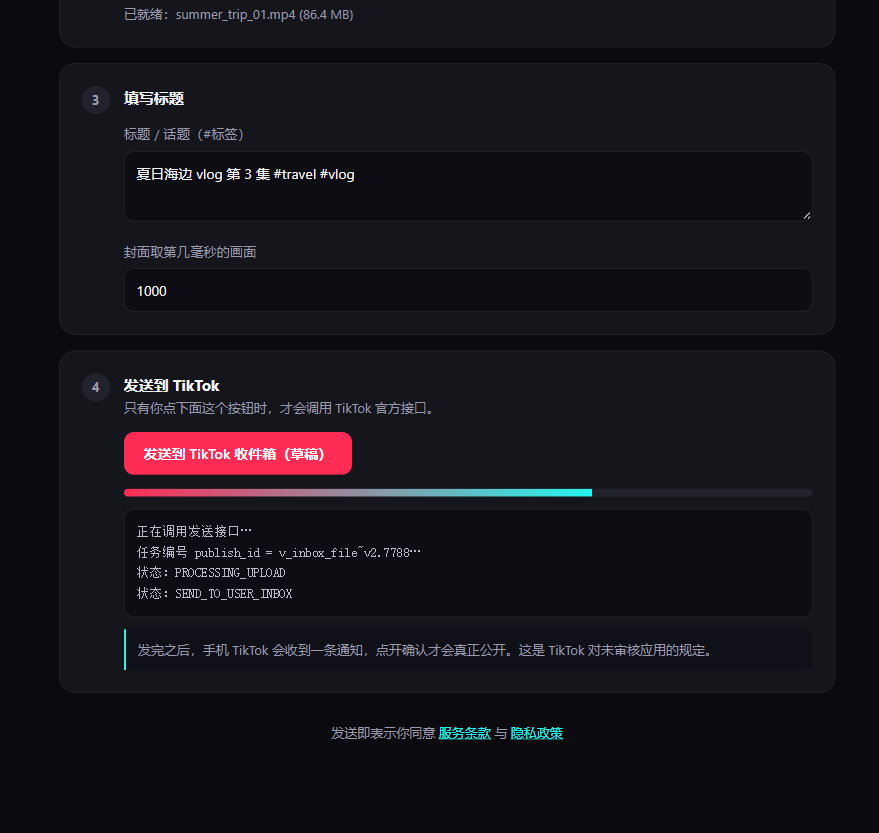

把你已经做好的视频
直接送进你的 TikTok 账号
AutoPost Studio 是一款网页工具。你用 TikTok 官方账号授权登录，选择电脑里已经剪好的视频文件， 它会通过 TikTok 官方 Content Posting API 把文件上传到你的账号，无需先传到手机。
它解决什么问题
运营多个账号、每天要发多条视频的时候，最烦的不是剪片子，是「把片子弄到手机上再一步步上传」。
电脑直传
视频留在电脑上，直接从浏览器上传到 TikTok，不用微信传文件、不用数据线、不用等同步。
标题可复用
一条视频配一套标题和话题，存成模板反复用，不用每次在手机上重新打一遍。
分片上传
大文件自动切片传输，中途断掉只补那一片，不用整个重传。
官方接口
走 TikTok 官方 Content Posting API，不是模拟点击、不是改网页，不碰你的账号密码。
进度可见
上传百分比、任务编号、每一步状态都实时显示，卡在哪一眼能看出来。
随时断开
不想用了就在页面点断开，或者去 TikTok 设置里撤销授权，我们立刻失去访问权。
三步发一条
整个过程在你自己的浏览器里完成，视频文件不经过任何第三方存储。
连接账号
点「连接 TikTok」，在官方授权页确认。我们只会拿到一个账号 ID，拿不到密码。
选视频、写标题
从电脑里挑一个 MP4，填标题和话题标签，顺手设一下封面取哪一帧。
发送
点发送，视频会上传到你的 TikTok 收件箱。打开手机 TikTok 确认一下即可发布。


想马上试？打开工作台 →
常见问题
还没说清的，看这里。
为什么发完还要在手机点一下确认？
这是 TikTok 对接口权限的分级。当前应用使用的是「上传到收件箱」权限，视频会进入你账号的草稿收件箱， 由你本人在 TikTok App 内确认后才公开。这保证任何内容都不会在你不知情的情况下被发出去。
你们会保存我的视频吗？
视频只在上传过程中临时经过服务器，传给 TikTok 后 24 小时内删除。我们不保留任何视频文件。
需要我的 TikTok 密码吗？
不需要，也拿不到。授权是在 TikTok 官方页面完成的，我们只收到一个访问令牌，可以随时被你在 TikTok 设置里撤销。
支持多大的视频？
最大 4 GB，格式 MP4（H.264）。文件越大上传越久，建议先压缩到合理码率。
可以一次发很多条吗？
可以逐条发送。请遵守 TikTok 的社区规范与发布频率限制，不要用它做批量灌水。
怎么彻底删除我的数据？
在页面点「断开连接」，或在 TikTok「设置 → 安全与权限 → 管理应用权限」里撤销本应用。 如需删除全部历史记录，发邮件到 zimu645@gmail.com，7 天内处理完毕。